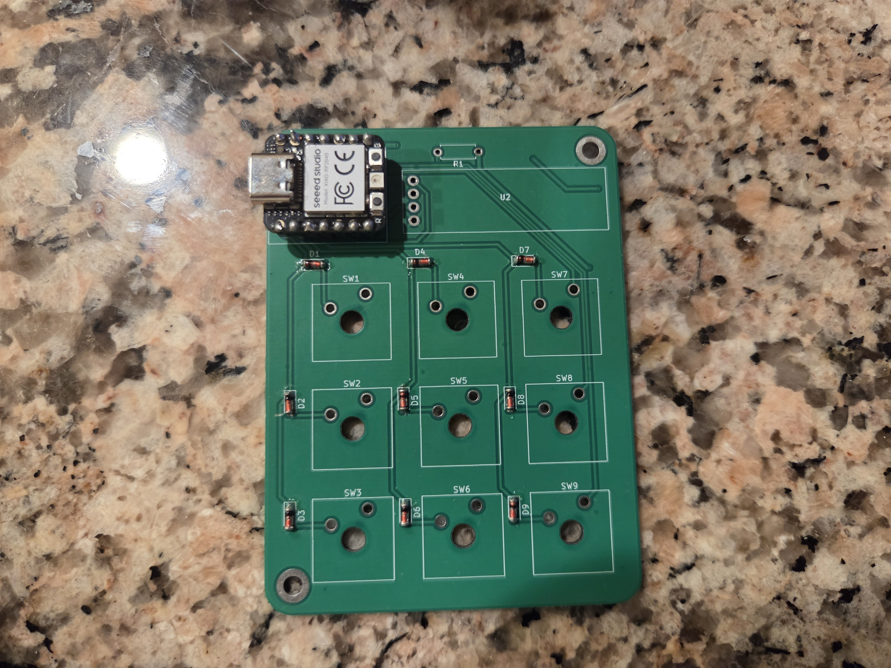

Custom MacroPad
Embedded Systems & Hardware Design

Overview
A custom-designed programmable mechanical macropad engineered from schematic to final assembly. The device features a custom PCB layout, hot-swappable mechanical key switches, onboard microcontroller integration, and a dedicated 3D-printed enclosure designed for ergonomic desktop workflow efficiency.
Key Features
- Custom PCB design featuring an optimized switch matrix and USB-C connectivity
- Support for mechanical key switches with hot-swap capability
- Onboard microcontroller programmed for USB HID keyboard functionality
- Fully programmable key layers, shortcut macros, and custom keymaps
- Custom-modeled 3D enclosure with precise switch plate clearances
- Surface-mount component soldering and hardware integration
- Low-latency input scanning with hardware debouncing in firmware
Technologies / Components Used
Project Details
This macropad was developed to streamline digital workflows and explore end-to-end hardware engineering. The hardware design process began with schematic capture and PCB routing in KiCad, integrating the microcontroller, matrix diodes, and switch sockets. The structural enclosure was 3D modeled to ensure precise tolerances for switch plate mounting, component clearance, and ergonomics. Firmware was configured to handle key matrix scanning, debouncing, and custom shortcut layer assignment over USB HID.


